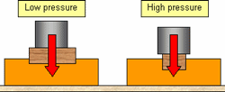
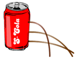
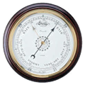

PRESSURE
Pressure (symbol: p or P) is the force applied perpendicular to the surface of an object per unit area over which that force is distributed. Various units are used to express pressure. Some of these derive from a unit of force divided by a unit of area; the SI unit of pressure, the pascal (Pa), for example, is one newton per square metre; similarly, the pound-force per square inch (psi) is the traditional unit of pressure in the imperial and US customary systems.
Pressure may also be expressed in terms of standard atmospheric pressure; the atmosphere (atm) is equal to this pressure and the torr is defined as 1⁄760 of this. Manometric units such as the centimetre of water, millimetre of mercury, and inch of mercury are used to express pressures in terms of the height of column of a particular fluid in a manometer.
Pressure in solids
This means that the pressure a solid object exerts on another solid surface is its weight in newtons divided by its area in square metres.
Pressure can be found using the equation:
Pressure = {force \over area}
P = {F \ A}
- The unit for pressure is the pascal (Pa).
- One pascal is equivalent to one newton per square metre.
- Atmospheric pressure is approximately 1 × 105 Pa.

Pressure in fluids
The pressure in a fluid is caused by the particles that make up the fluid.
These particles have a disordered motion so the pressure acts equally in all directions.
Three factors affect the pressure in a fluid:
- The depth the pressure is measured at
- The density of the fluid
- The gravitational field strength
This allows us to derive the equation:
P = rho x g x h

Atmospheric pressure
It also called barometric pressure, is the pressure exerted by the weight of air in the atmosphere of Earth (or that of another planet). Low-pressure areas have less atmospheric mass above their location, whereas high-pressure areas have more atmospheric mass above their location.
Likewise, as elevation increases, there is less overlying atmospheric mass, so that atmospheric pressure decreases with increasing elevation.
